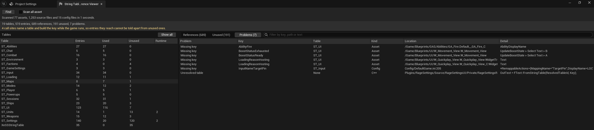

02 // UNREAL ENGINE PLUGINS
Open sourcing
Voidstar systems.
Tools created during the development of my passion project, made available to the community.
Explore GitHub01 // UI & GAME SYSTEMS
Rage Settings.
A modular framework for game, audio, video, and input settings. Shared change tracking, reflection-generated UI rows, and ready-to-use UMG widgets give you a foundation to build on.
- Pending and applied values with shared dirty tracking
- Support-aware DLSS, FSR, XeSS, and frame generation options
- Enhanced Input key remapping and localized UI
- Runtime systems separated from the UI layer
Illustrative UI; included widgets use default widget styling.
02 // NETWORKING
Rage Host Migration.
A peer-to-peer host migration plugin for Unreal Engine. Clients mirror replicated state while the host is online, so a designated successor can restore the match when the connection drops.
- Successor ordering agreed before a disconnect
- Cached match and player state for restoration
- Reconnect attempts and fallback candidates
- Integration hooks for your sessions and loading screens
Clients mirror the host’s replicated state.
03 // EDITOR & LOCALIZATION
Rage String
Table Tools.
A focused editor toolset for inspecting String Table references and tracking down the source of missing keys. Scan, filter, and get back to the asset that needs attention.
- Configurable scanning from Project Settings
- Views for references, unused entries, and problems
- Accessible from the Unreal Editor Tools menu

No more hunting missing loc text.
Start with the repository.
Each plugin has its own setup and integration requirements. Check its README for the supported engine version, dependencies, and limitations. Upscaler features in Rage Settings require the relevant vendor plugins.